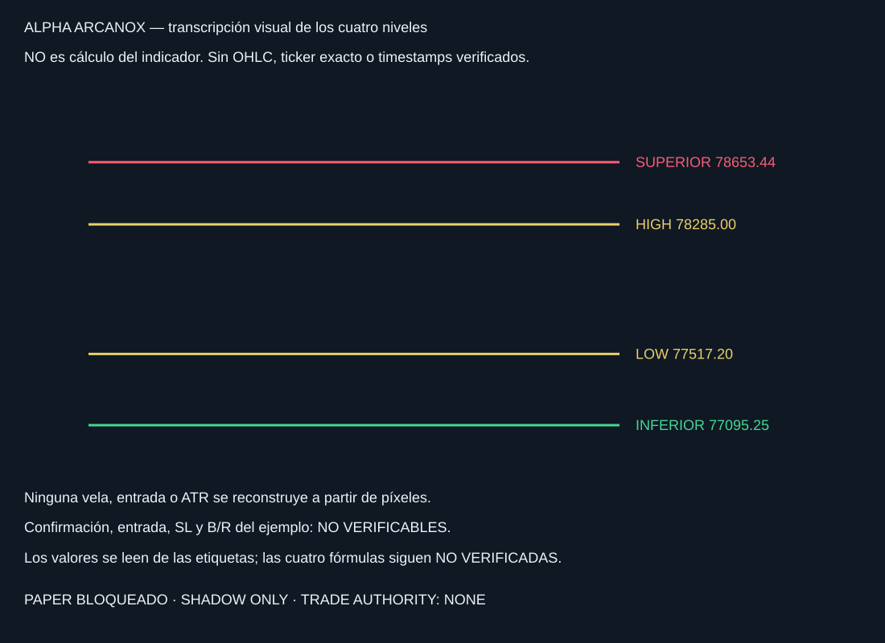
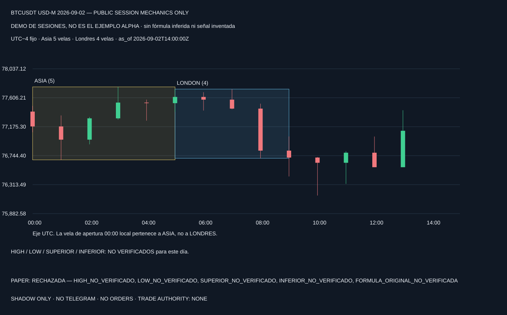

NO-GO PAPER: cuatro fórmulas NO VERIFICADAS. Sin ticker/fecha exactos del ejemplo original.

Esta fecha/venue son de prueba, NO la captura original. No se trasladan sus cuatro niveles a esta serie.

Snapshot bloqueado · Diseño /killzone, no integrado · Controles artificiales de riesgo
SHADOW ONLY. TRADE AUTHORITY: NONE.